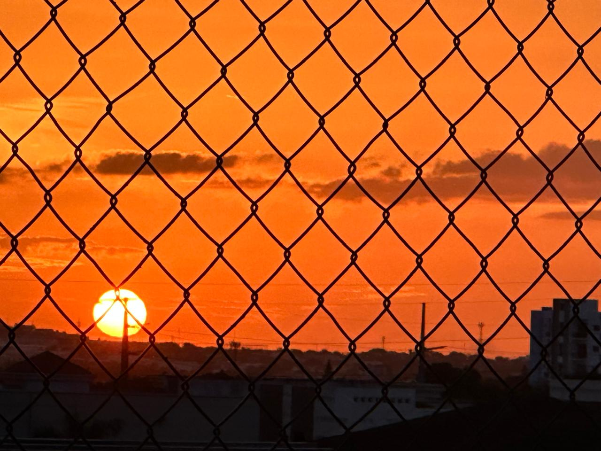
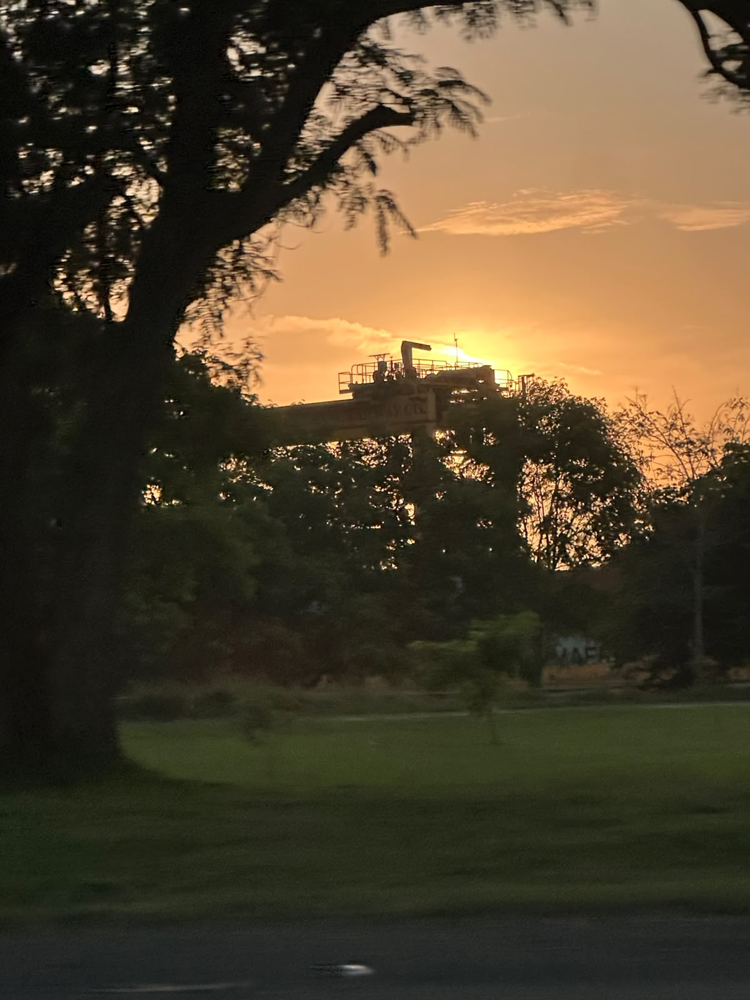

31 · 07
El arte de observar


Para ti.
No hice esto con la intención de cambiar tu vida, ni esperando que estas palabras cambiaran algo entre nosotros. Lo hice porque aprendí que hay verdades que, cuando permanecen demasiado tiempo en silencio, terminan perdiendo parte de su valor.
Comprender aquel "una mujer como yo" tomó más tiempo del que imaginé. Al principio fue una frase; después entendí que era una advertencia. Hoy creo que era una descripción bastante precisa.
Siempre he desconfiado de las conclusiones apresuradas. Habría sido muy fácil confundir tu amabilidad, tu vocación de servir o la forma tan genuina en la que tratas a las personas con algo dirigido exclusivamente hacia mí. Nunca lo hice. Me habría parecido injusto contigo y deshonesto conmigo. Preferí que el tiempo hablara antes que mis emociones.
Siempre he procurado que la razón tenga la última palabra. Sin embargo, también entendí que, al final, somos humanos: la razón nos ayuda a comprender lo que vivimos; el corazón, en cambio, nos recuerda aquello que también forma parte de la verdad. Quizá esta carta exista precisamente porque, por una vez, ambos decidieron estar de acuerdo.
Hay una frase que me has escuchado decir más de una vez: los ojos no mienten. Con el tiempo entendí que quienes sí nos equivocamos somos nosotros al interpretarlos; por eso decidí observar antes de concluir, conocer antes de imaginar y dejar que los hechos tuvieran siempre la última palabra.
Lo más incómodo de conocerte fue descubrir que, por primera vez, mis propios argumentos empezaban a quedarse sin razones para llevarme la contraria. Nunca imaginé que alguien pudiera convertirse en una excepción sin haber intentado serlo y, casi sin darme cuenta, tampoco supe en qué momento dejé de disfrutar nuestras conversaciones para empezar a esperarlas.
Fue entonces cuando comprendí que mi percepción sobre ti ya no dependía de un momento, sino de una certeza.
Nunca fueron un café, una conversación o un gesto aislado los que marcaron la diferencia. Todo eso, por sí solo, habría sido insuficiente. Lo que terminó convenciendo a mi razón fue descubrir que la mujer que conocía en los momentos sencillos era exactamente la misma cuando nadie esperaba nada de ella.
Confieso que durante mucho tiempo pensé que lo más sensato era dejar todo esto donde alguna vez te dije: en el ático del alma. Y, para ser sincero, habría podido hacerlo. Llevar esta verdad conmigo nunca representó un problema.
Pero también entendí que el respeto no consiste únicamente en guardar silencio. A veces consiste en decir aquello que la otra persona merece saber, sin convertirlo en una carga.
Casi sin darme cuenta, terminé mostrándote una parte de mí que muy pocas personas conocen. Tú llegaste hasta ese lugar con una naturalidad que todavía me cuesta explicar y, quizá, sin darte cuenta.
No escribí esto para cambiar el rumbo de nada. Simplemente me pareció injusto que fueras la única persona que desconociera el motivo de algunas de mis formas de actuar.
A partir de aquí, el silencio recupera su lugar: ya no para ocultar una duda, sino para custodiar una verdad. Siempre he creído que las palabras tienen un momento exacto y que, cuando ese momento pasa, insistir es quitarles dignidad.
Hay verdades que no necesitan ser correspondidas. Solo conocidas.
Esta era una de ellas.
Ahora puedes comprender aquello que yo llevaba mucho tiempo entendiendo.
Con eso, mi silencio también encuentra su lugar.